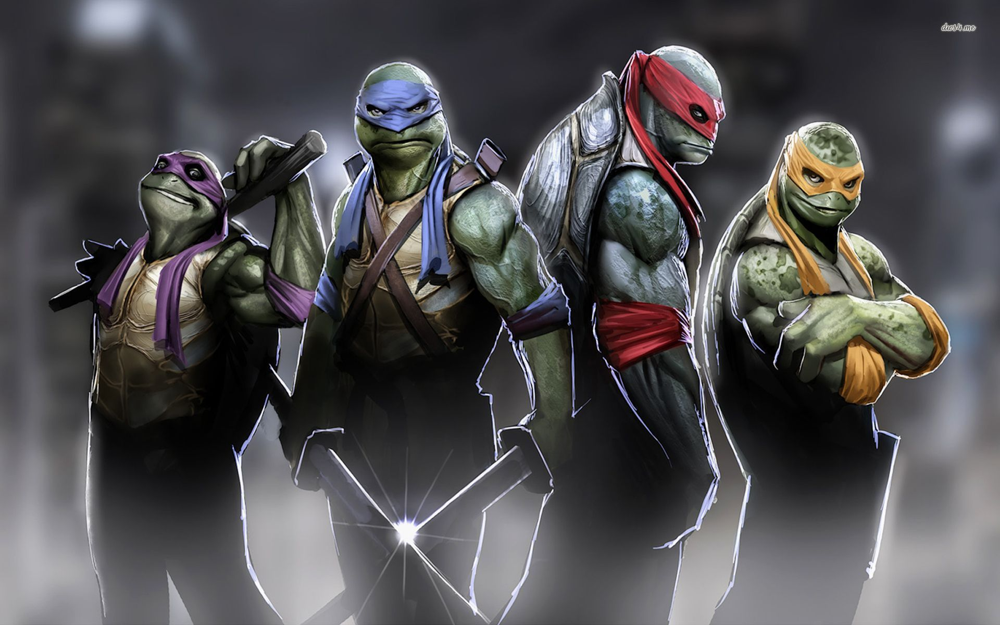

Donatello, Leonardo, Raphael & Michelangelo
The Teenage Mutant Ninja Turtles (often shortened to TMNT or Ninja Turtles) are four fictional teenageanthropomorphic turtles who are named after four Renaissance Italian artists.
The Teenage Mutant Ninja Turtles (often shortened to TMNT or Ninja Turtles) are four fictional teenageanthropomorphic turtles who are named after four Renaissance Italian artists.